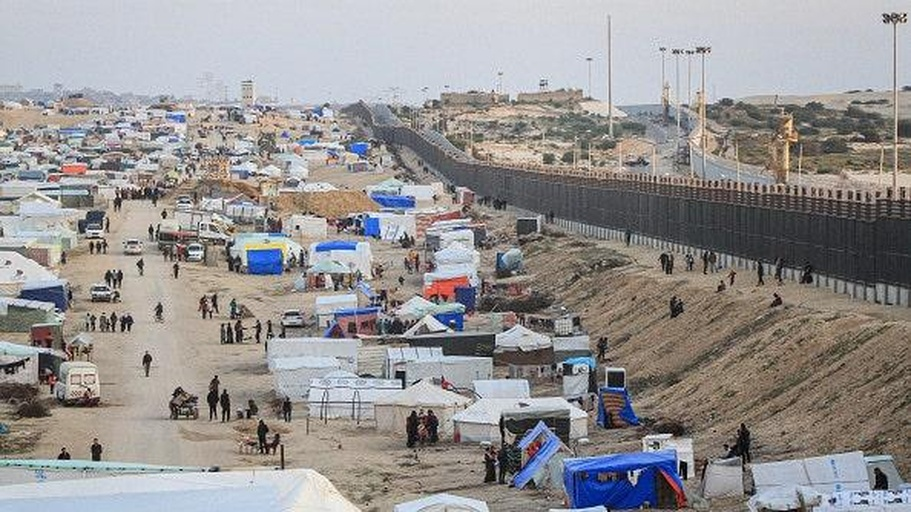

Egypt boosts its Gaza border security amid war with IsraelEgypt has sent about 40 tanks and armored personnel carriers to northeastern Sinai within the past two weeks as part of a series of measures to bolster security on its border with Gaza, two Egyptian security sources said. The deployment took place ahead of the expansion of Israeli military operations around Gaza's southern city of Rafah, where much of its population has sought safety, sharpening Egyptian fears that Palestinians could be forced en masse out of the enclave. Israeli warplanes struck Rafah, which adjoins the border, on Friday and Prime Minister Benjamin Netanyahu ordered the military to prepare to evacuate the displaced people. Since the war between Israel and Hamas erupted on Oct. 7, Egypt constructed a concrete border wall that reaches 6.6 yards into the ground and is topped with barbed wire. It has also built berms and enhanced surveillance at border posts, the security sources said. Last month Egypt's state information service detailed some of the measures it had taken on its border in response to Israeli suggestions that Hamas had obtained weapons smuggled from Egypt. Three lines of barriers made any overground or underground smuggling impossible, it said. Images shared with Reuters by the Sinai Foundation for Human Rights, an independent group, appear to show the installation of the wall in December, with several berms running behind it. Later pictures, which the group said were taken in early February, appear to show three vertical layers of coiled barbed wire being installed on top of the wall. Reuters was not able to independently verify the images. Satellite images from January and December also show some new construction along the 13 km (8 mile) border close to Rafah and the extension of a wall to the sea's edge at its northern end. Egyptian and Israeli authorities did not respond to requests for comment. The new measures come after an expansion of security in northern Sinai as Egypt's military consolidated its grip against an Islamist insurgency that escalated a decade ago. Well before the current war in Gaza broke out, Egypt said it had destroyed tunnels through which smuggling to Gaza had previously flourished, and had cleared a buffer zone close to the border. On the approach to the Rafah Crossing with Gaza, the remains of razed houses can be seen along with miles of concrete walls that have been built parallel to the sea and near roads close to the border. TIES UNDER STRAIN Egypt and Israel have been at peace for more than four decades and in recent years have extended ties through Israeli exports of natural gas and security coordination around their shared border and the Gaza Strip. The two countries have maintained a blockade on Gaza, strictly limiting the movement of people and goods across its borders, after Hamas took control there in 2007. But the relationship has come under strain because of Israel's current military operation in Gaza, unleashed in retaliation for an Oct. 7 attack on Israel by Hamas. Egypt has repeatedly raised the alarm over the possibility that Israel's offensive could displace desperate Gazans into Sinai, while bristling over suggestions from Israel that it would retake full control of the Gaza-Egypt border corridor in order to ensure the Palestinian territory's demilitarization. In January, Egypt announced two operations to tackle drug smuggling in northeastern Sinai in an apparent effort to demonstrate its control of the area. An Israeli official told Reuters that restructuring of security on the border, where he said a small number of tunnels remained, was under regular discussion by the two countries. Israel would try to organize for the movement of displaced Palestinians northwards within Gaza ahead of any military operation there, the official said. Egyptian security sources have played down any discussions and said they are prioritizing efforts to reach a ceasefire in Gaza. The state information service called accusations of smuggling "lies" intended to give cover to Israel's objective of occupying the border buffer zone, known as the Philadelphi Corridor. Egypt has also blamed Israel for limiting deliveries of aid into Gaza, where the risk of famine is growing and aid workers have warned of disease spreading. Israel has denied holding up or rejecting humanitarian supplies. Egypt has framed its opposition to the displacement of Palestinians from Gaza as part of wider Arab rejection of any repeat of what Palestinians mourn as the "Nakba", or "catastrophe", when some 700,000 fled or were forced from their homes in the war surrounding Israel's creation in 1948. Diplomats and analysts say Egypt is also concerned about infiltration by Hamas and hosting a large refugee population. In October, President Abdel Fattah al-Sisi warned that displacement could turn Sinai into a base for attacks against Israel. |
 |